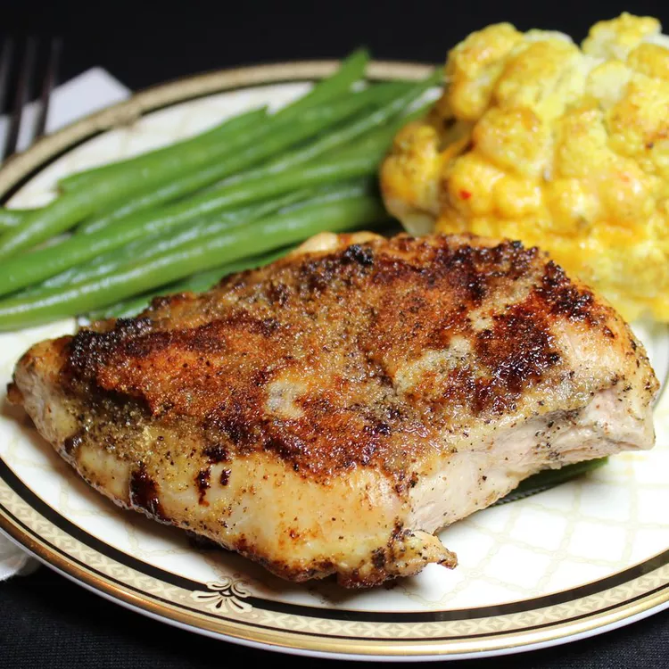

Lemon Garlic Chicken

Pan fried lemon garlic chicken
This is a quick easy dinner.
It takes 10 minutes to prepare and 15 minutes to cook.
This recipe serves 3 people
Ingredients
- 2 tablespoons butter
- 3 skinless, boneless chicken breast halves
- 1 1/2 teaspoons salt
- 1 1/2 teaspoons ground black pepper
- 2 tablespoons garlic powder, divided
- 1 lemon, juiced
Directions
- Melt butter in a skillet over medium-high heat
- Season chicken with salt and pepper; place in meled butter.
Cook chicken, flipping frequently, until browned, about 5 minutes.
Sprinkle 1 tablespoon garlic powder over chicken; cook for 2 minutes.
Flip and sprinkle remaining 1 tablespoon garlic powder on the side;
cook for 2 minutes.
-
Pour lemon juice over each side of chicken and cook until
no longer pink in the center, 5 to 10 minutes more.
An instance-read thermometer inserted into the
center should read at least 165 degrees F (74 degrees C).
Back to homepage